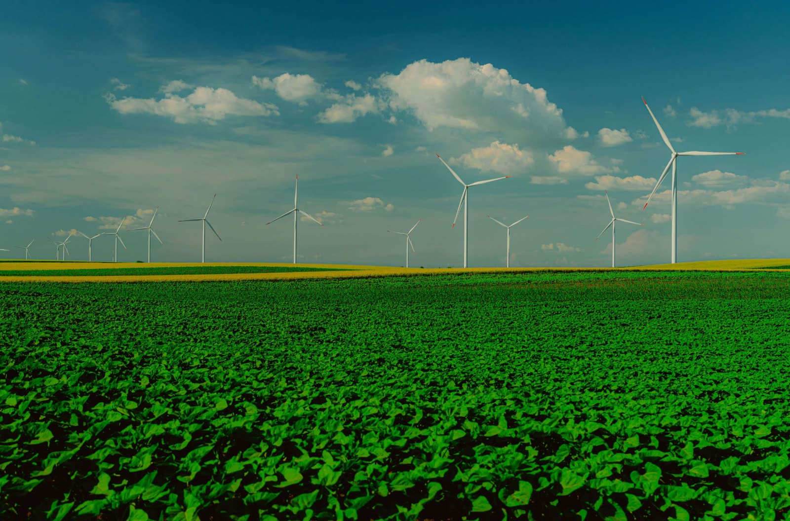
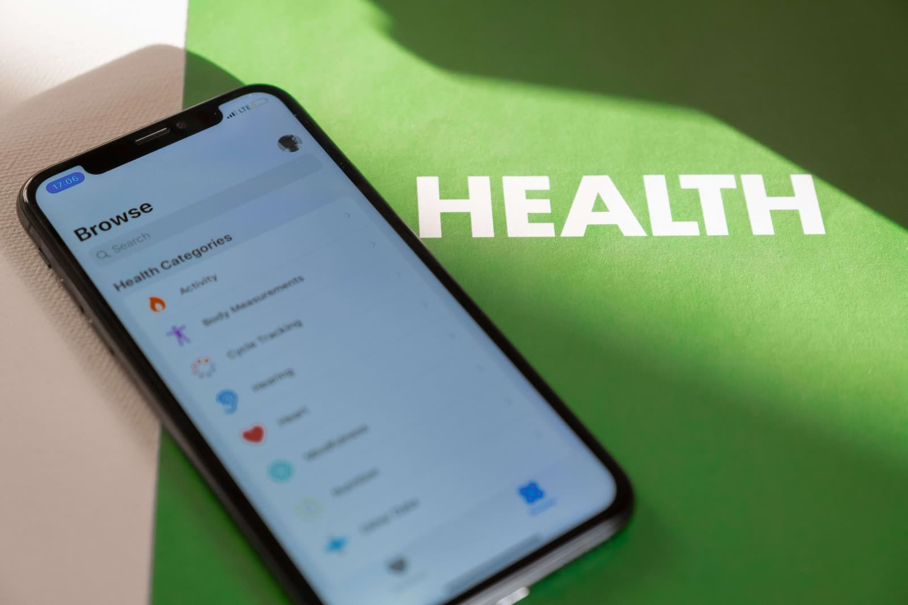

Founder
Erick Janganya
Founder of the Erick Janganya Foundation and an independent candidate for the Embakasi South parliamentary seat in the 2027 general election.
Read Erick's storyThe public record of every project and promise across Embakasi South's five wards, documented as it happens and open to anyone checking in from anywhere.
One public record, two ways to check it
Every project across Embakasi South's five wards, dated, budgeted and status-checked as work happens, not at election time.
See the trackerEvery commitment Erick has made, tracked against what has actually been delivered: kept, in progress or not yet started.
See the scorecardDispatches from the ground: project updates, ward visits, and the people behind the numbers on the tracker.
A look at the crew, the timeline, and what's left before the crossing reopens for good.
Read the updateScreenings, referrals, and the residents who showed up on a Tuesday morning.
Read the updateConcrete's poured and equipment's ordered: a progress check on the training space.
Read the updateFour things every project on this site has to answer to before it's marked verified.
Every claim traces back to a project record anyone can check. Nothing stands on reputation alone.
See it on the trackerBudgets, funding sources and progress are published as work happens, not summarised after the fact.
See funding sources
03Projects are chosen to outlast a single term, built to serve Embakasi South well beyond one election cycle.
Read the visionCredit is only claimed for work the foundation actually delivered. Never overstated, never borrowed.
Read Erick's storyThe same categories used on the Development Tracker. Every project maps to one of these.
Roads, drainage, footbridges and public works that hold up under daily use.
See infrastructure projects
Outreach camps, maternal health checks and improved access to basic care.
See health projectsPublic water points and sanitation upgrades in the wards that need them most.
See water projectsSkills training and small business support so opportunity doesn't require leaving the constituency.
See youth projectsWhat separates a claim from a checked fact on this site.
A team member visits in person and photographs the project as it stands, dated on arrival.
Marked Planned, Ongoing, or Completed based on what's actually there, not what was announced.
Every project is labelled honestly: Foundation-funded, Government (NG-CDF), or Partner-funded.
The tracker and, where linked, the Promise Scorecard both update, visible to anyone, immediately.
Who runs this, in their own right, not just Erick.
Founder of the Erick Janganya Foundation and an independent candidate for the Embakasi South parliamentary seat in the 2027 general election.
Read Erick's storyPrograms Lead
Plans and oversees projects across the five wards.
Head of Verification
Leads site visits and signs off every status on the tracker.
Finance and Compliance Lead
Keeps budgets and funding sources accurate and published.
Communications and Data Lead
Keeps the tracker, scorecard and updates current.
Community Liaison
Resident contact point for Imara Daima.
Community Liaison
Resident contact point for Kwa Njenga.
Community Liaison
Resident contact point for Kwa Reuben.
Community Liaison
Resident contact point for Pipeline.
Community Liaison
Resident contact point for Kware.
Board Chair
Oversees the foundation's governance.
Treasurer
Reviews how funds are received and spent.
Independent Advisor
Offers outside perspective on the foundation's work.
The foundation publishes its projects, funding sources and promises openly on this site, so anyone can check its record.
Sign up to receive the latest updates on tracker projects, promise updates, and events across Embakasi South.
Every focus area above maps directly onto the projects already logged on the tracker.